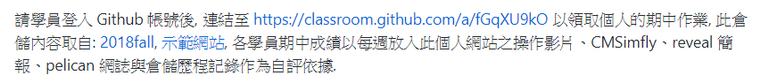
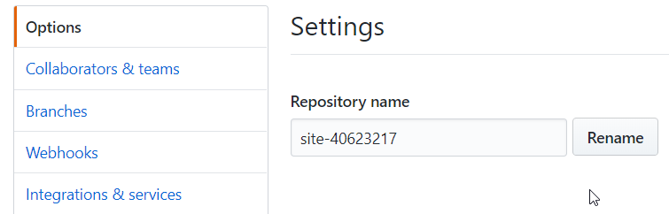
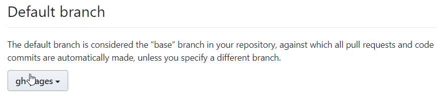
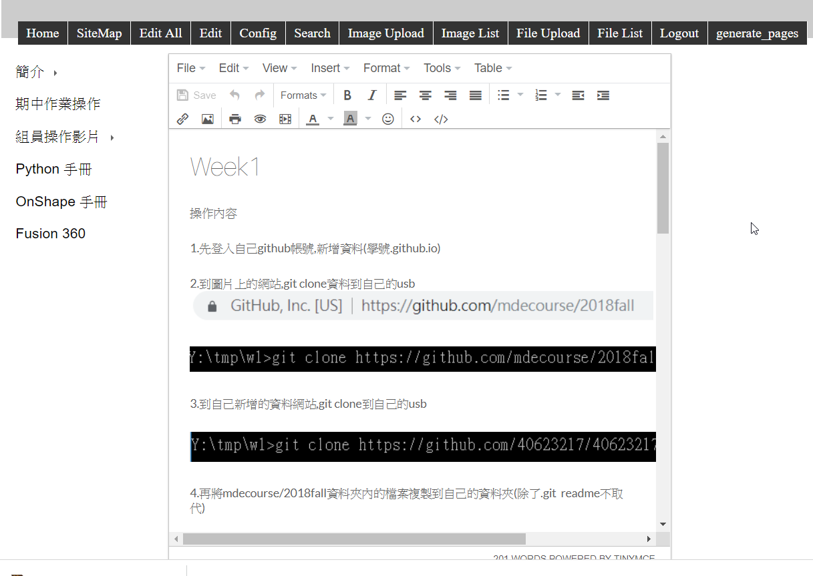

操作內容
1.先到mde.tw內的issue內領取學期作業

2.領完後進到自己作業的資料內name(site-學號),setting內的Branches更改為分支(gh-page)


3.接著到與上星期雷同,git clone https://github.com/mdecadp2018/site-scrum-2到自己的usb
4.git clone https://github.com/mdecadp2018/site-40623217到自己的usb
5.複製site-scrum-2的資料到自己的site-40623217(除了.git readme.md不取代)
6.到自己的動態https:localhost:8443內更改內容,login(admin)
7.開始每周維護自己的網站內容

8.更改完後,用generate_pages, 將動態分頁轉換為靜態分頁
9.完成後再到https:localhost:8444檢查是否轉換
10.回到黑框內打上git add . git status git commit -m git push等指令上傳到遠端